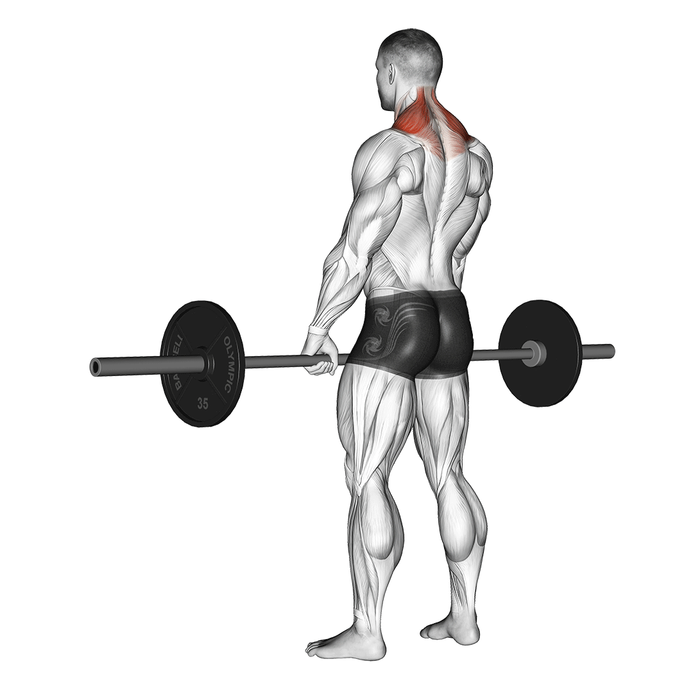

Vállizom gyakorlatok

|
Vállból NyomásVedd ki a rudat a villából. Tartsd a rudat úgy, hogy 90°-os szöget zárjon be a könyököddel! Tartsd a törzs- és farizmokat feszesen a maximális stabilitásért! Fújd ki a levegőt, nyomd fel egyenes vonalban a rudat! Engedd kontrolláltan vissza a rudat! Ügyelj arra, hogy a negatív szakasz lassú és irányított legyen! Ne nyújtsd ki teljesen a könyököd! |
|
|---|---|---|
OldalemelésÁllj kiegyenesedve, tarts hajlított könyökkel egy-egy egykezes súlyzót mindkét kezedben. A súlyzókat egyszerre emeld ki oldalra a tested mellől addig, amíg vállmagasságnál egy kicsit fentebb nem kerül a súly. Engedd vissza lassan, és ismételd meg a gyakorlatot. |

|
|
 |
Vállból Nyomás ÜlveÜlj a padra, dőlj hátra, és helyezz két kézisúlyt a combjaidra! Egy edzőtárs vagy térdelőkés segítségével, helyezd a kézisúlyokat váll vonalba! Egyenes vonalban nyújtsd ki karjaid! Ügyelj azonban, hogy ne nyújtsd ki teljesen a könyöködet! Kontrollált, lassú mozdulattal engedd le a súlyokat! Fontos, hogy a kézi súlyokat legalább a fejvonalig engedd le! Az alsó holtponton állítsd meg a súlyokat, várj egy másodpercet, majd nyomd ki őket újra! Így elkerülhető, hogy lendületet használj. |
|
VállvonogatásÁllj egyenesen és tarts két nehezebb kézisúlyzót (a gyakorlat rúddal is végezhető) a tested mellett, a tenyereid befelé nézzenek. Ha rúddal végzed a gyakorlatot, kartávolságra a tested előtt vegyél fel vállszélességű vagy kissé szűkebb fogást. Emeld a válladat egyenesen felfelé, mintha a füledet szeretnéd megérinteni. Ne hajlítsd be könyöködet, és lassan ereszd vissza a rudat a kiinduló helyzetbe. |
 | |
 |
Állig HúzásÁllj egyenesen, szűk fogást véve (a mutatóujjak kb. 15 cm-re legyenek egymástól a rúdon) a kétkezes súlyzó közepén, tenyerekkel a test felé. A mozgás elején a súlyzónak keresztbe kell feküdnie felső combodon, karod pedig legyen egyenes. Lassan húzd a súlyzót felfelé tested közelében egy vonal mentén, könyöködet felfelé emelve és mindig a kezed vonala fölött tartva. Amint a rúd nyakmagasságba ér, tarts szünetet, és ereszd le a súlyzót lassan ugyanezen vonalon, egészen addig, míg a combodhoz ér. |
|